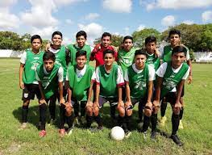
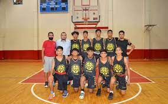
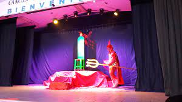
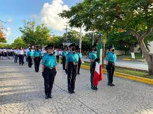
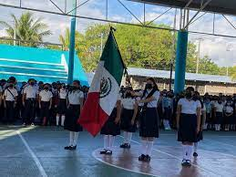

¿Qué son los paraescolares?
Las Actividades Paraescolares buscan preservar los espacios y actividades extra curriculares, además de contribuir en la educación integral del estudiantado en sus diversas fases que lo componen: física, psicológica, emocional y social.
Actividades paraescolares del Plantel Cancún 2
Fútbol
Basquetbol
Boleibol

Pintura

Danza

Teatro
Banda de guerra
Escolta
